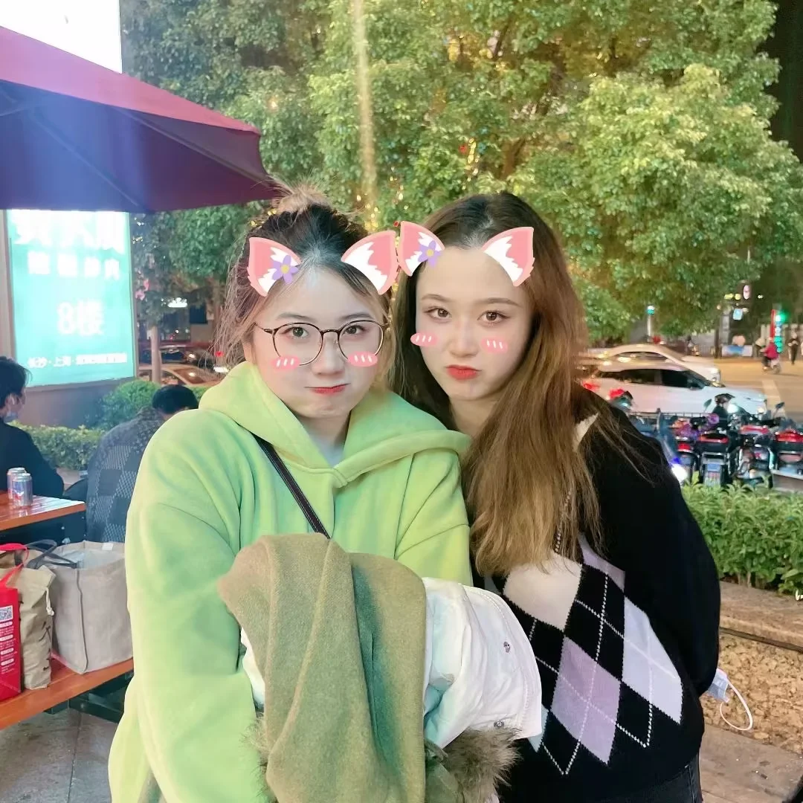

还记得今天是什么日子嘛？！
不管别人记不记得，但我一定会记得~
对了，宝宝，你知道我最喜欢什么神吗？
你的眼神！！！
-------------爱你的方美美


这一天，故事落下了帷幕
那个同骑士般正直的绅士青年
高唱着赞歌的英国绅士
人间失格的吸血鬼
骑士、僧侣、解说、面包
一切的恩怨都随着轮船沉入大海
“人类的赞歌就是勇气的赞歌”
他们的精神流传了下来
你是这年听说的嘛？
道德沦丧，富二代欧拉打哭穷义弟，含冤受屈，法学生血荐面具讨天理
尘封了千年的大门再次打开
曾经的朝圣者坠入了执念的地狱
沉睡了史前生物们渐渐苏醒
战斗的潮流将再次涌起
乔纳森与齐贝林的再次相遇
齐贝林之魂孕育着黄金精神
最后的波纹带去了挚友的新生
结束了这场战斗的纷争
“你还有办法打倒这样的怪物吗？jojo”
“恩，有的，还剩仅有的最后一招！”
“你给路达呦~~~史摩基~”
“我德意志的科学技术世界第一！！！！！！！”
“我最后要展示出的，是代代相传的，寄希望于未来的齐贝林之魂！”
“这是我最后的波纹了！JOJO！”
"这是用他的血造成的水泡吗？"
"看它没有破，想必凝聚了他最后的波纹"
"为了同伴，为了把这个东西留下，才没有用最后的波纹攻击我么吗？"
"就给你吧"
"并非我变得像人类一样多愁善感"
"只是对我来说"
"强大的战士才是真理"
"勇者才是朋友，是尊敬的对象"
"我会把你永远留在我记忆一角，西撒"
"如同泡沫般幻灭的男人啊--西撒"
为了家人、朋友，一场周游世界的旅途开始了
“乔斯达家百年的恩怨将在此划上句号”

这一年，你应该认识了很多同好吧？

“乔斯达家有一项代代相传的打法，那就是...走为上策！”
吾名为「简·皮耶尔·波鲁那雷夫」，为了吾妹的名誉，为吾友阿布德尔的安宁，J·凯尔，我一定要把你打入绝望的深渊！
“吾名花京院典明，为吾友阿布德尔雪耻，为身畔吾友波鲁那雷夫之妹之安息——我要你以死谢罪！”
如果你在这房子里失踪或者收受了，我是不会去救你的，波鲁纳雷夫，伊奇危险啊！！！
接招吧Dio，半径20米额绿宝石水花！
“汪汪~”


恭喜你，成年啦
虽然没有觉醒替身
却也获得了命运的石鬼面
哈哈哈哈
终要说再见了
书上说天下没有不散的筵席，书上也说人生何处不相逢
在那个蝉鸣不止的夏天，我安静的回头同那晚霞说了声再见。
后来我见过的所有晚霞，都没有那天的晚霞那么美

宝，我刚刚去输了液
输得什么液？
想你的液~
哈哈哈哈哈哈哈，不止生日
往后的日子也请继续闪闪发光
无论多大，都要永远热爱童话、英雄与魔法，对了还有替身使者
做好准备，扬帆起航了！
2023，全糖，去冰！